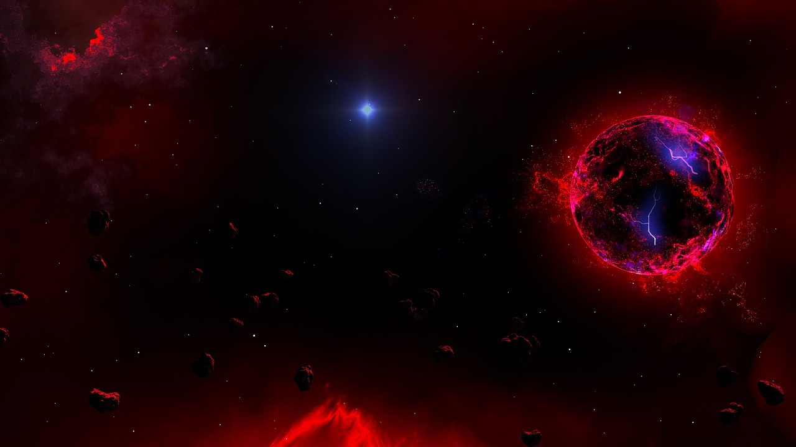
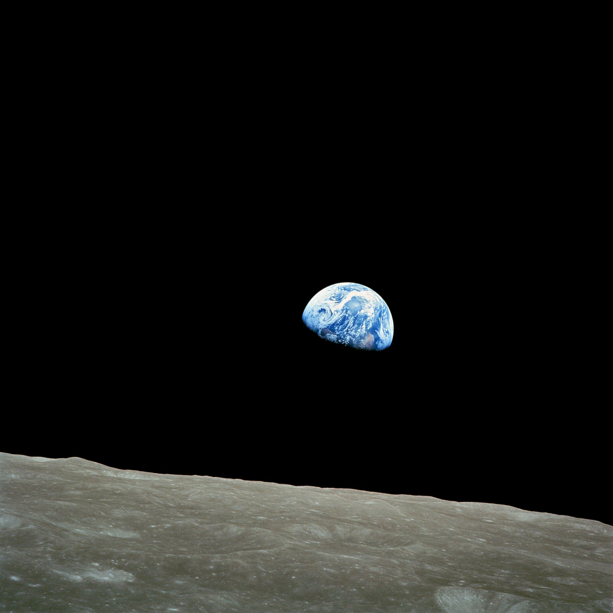

Planetas
Lugares inexpicables en el universo

Sigue explorando
Qué hay más alla de esta esfera azul

Estrellas
Millones de ellas a lo largo de nuestra galaxia
Vivimos en un universo extraño y maravilloso. Se necesita una extraordinaria imaginación para apreciar su edad, tamaño, violencia, e incluso su belleza. Podría parecer que el lugar que ocupamos los humanos en este vasto cosmos es insignificante; quizá por ello tratamos de encontrarle un sentido y de ver cómo encajamos en él.
—A Briefer History of Time, Stephen Hawking.